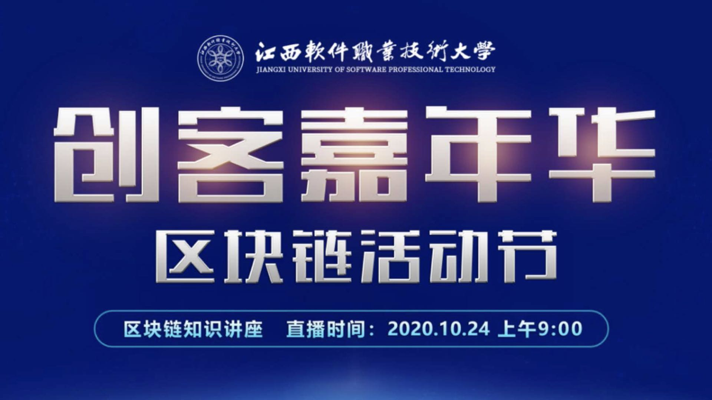
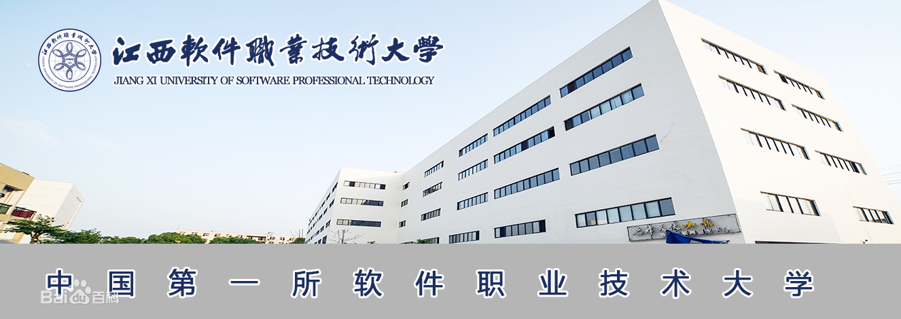
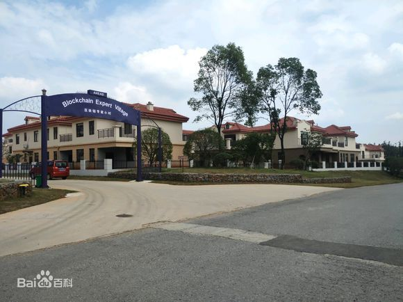
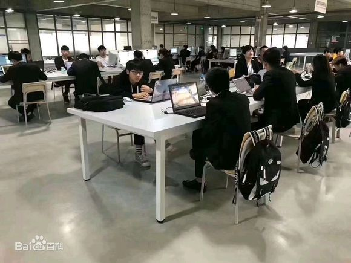
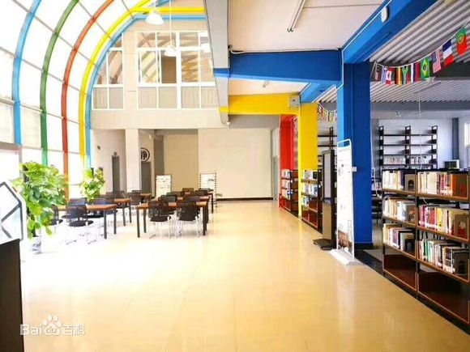

软件工程学院现有在校生2000余人。开设本科专业4个，即：软件工程、智能控制技术、计算机应用工程、 大数据技术与应用；开设了专科专业5个，即：软件技术、嵌入式技术与应用、人工智能技术服务、工业机器人技术、 大数据技术与应用。软件技术专业根据市场用人需求，设置了五个专业方向，即（软件技术(Web软件设计)、软件技术(移动互联网开发技术)、 软件技术(网络游戏开发方向)、软件技术(软件测试方向) 、软件技术（Ui设计）等）。 学院共有专任教师74名（不含思政部和基础教学部），其中正高职称 8人，占总数的10.1%、副高职称13人， 占总数的17.8%，中级职称24人，占总数的32.8%。具有硕士学位以上的21人，占总数的28.8%，本科以上学历的52人，占总数的70%。 有江西省中青年学科带头人1名，江西省高校中青年骨干教师2名。

2020年10月24日，江西软件职业技术大学区块链活动节隆重启幕。 此次区块链活动节是学习习近平总书记“10·24”讲话精神的重要活动， 是先锋软件集团和江西软件大学自2015年来，在区块链领域探索出的具有纪念意义的活动， 它生动地诠释了江西软件大学“学习的先锋、运动的先锋、快乐的先锋、创新的先锋”的校园文化精神。
江西软件职业技术大学建有四大特色实训基地——国家级计算机与软件技术实训基地，江西省服务外包人才实训基地、 企业化实训基地，致力于帮助学生增强独立生存能力、团队合作能力、IT应用能力、上岗适应能力和职业发展能力。 现有专业实训室19个，语音教学516座，教学用计算机480台，教学仪器设备总值2825余万元。 学校重视实践教学环节建设和教学现代化基础设施建设，普及了网络化教学，建有 15 个实训室， 配有教学用计算机 480 台，教学仪器设备总值2480万元，生均教学仪器设备值 5507 元。拥有语音教室516座， 多媒体教室22间，电子教室85间，每间电子教室设有65个网络端口，全校现有有线端口15000余个。师生人手一台笔记本电脑， 学生可享受随时随地上网所带来的便利，学生对现代化设备的使用率很高。


学校推进“人才强校”战略，抓住引进、培养、使用、评价、管理和激励等环节， 建立健全科学合理的人才工作体制和运行机制，确保学院的可持续发展。进一步调整师资结构， 提升教师队伍素质，重点建设“双师型”教师队伍和在学科领域有一定知名度的高水平的学科专业带头人队伍。 到 2010年，专任教师400名，其中硕士学位比例达到50% ，博士学位达到10% ，副教授或副高职称达到30%， 正教授达到20%,80% 以上的专业教师成为“双师型”教师或具有双师素质。



(1）办学形式。形成全日制、非全日制、网络教育、短期培训兼备的多层次、多规格、多形式办学格局， 成为 IT 行业的高职教育基地和职业技术培训。(2)办学规模。2019年全日制在校生规模达到10000 人， 各类培训数万人次，形成以职业本科教育为主的信息技术产业的技术教育体系，在职业本科教育的教学研究、 科研开发和人才培训方面在国内处于比较领先地位。(3)专业设置。适应市场需要，建设特色专业， 形成软件技术为主体专业和计算机信息管理、计算机应用、计算机网络技术、 电子商务其它类专业共同发展的高职教育体系。